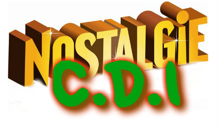

Le numérique est partout... et les enfants y passent un temps de plus en plus conséquent !
C’est peut-être un
HIC, mais c’est justement pour cela que
l’école se doit de les accompagner dans leur pratique des nouvelles technologies.
Facile de pubier sur le net !
Facile de manque de respect sur le net !
Facile de s’approprier ou de de mettre en ligne des choses qui ne nous appartiennent pas sur le net (photos, videos, musiques...) !
Facile aussi de faire suivre des informations fausses, si on ne les verifie pas avant, sur le net !
Facile, facile... donc difficile en réalité de prendre conscience que sur Internet, les règles de bon sens sont les mêmes que celles de la VRAIE vie !
Et pour le découvrir, rien de mieux que de mettre les mains dans le cambouis numérique ! Il faut forger pour devenir forgeron...
Au CDI, un certain nombre de sites et blogs mis en place ad hoc permettent aux élèves de se frotter à la réalité du web encadrés par un adulte sensible à la question du respect des droits sur internet !
la visite peut commencer !
Une sélection de sites, classés par matière !!!
Un point de départ sûr sur le web !
Séquence Nostalgie : le site du CDI version 1. 0 !

Le blog de l’équipe du journal du collège !
Laissez nous des messages !
 Critiques littéraires en herbe, ce blog est pour vous…
Critiques littéraires en herbe, ce blog est pour vous…
pour y participer, passer nous voir au CDI !
Vitrine des activités de l’atelier manga…
quand on ne dessine pas, on scanne !
 Blog ponctuel pour suivre la mission de Prune au Burkina Faso,
Blog ponctuel pour suivre la mission de Prune au Burkina Faso,
partenariat avec Peuples Solidaires 05